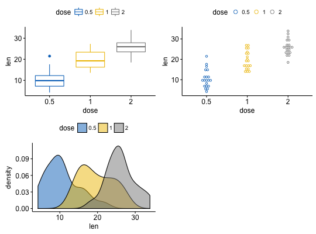
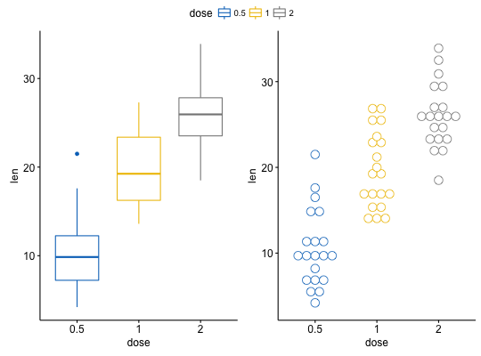

Arrange multiple ggplots on the same page. Wrapper around
plot_grid(). Can arrange multiple ggplots over
multiple pages, compared to the standard
plot_grid(). Can also create a common unique legend
for multiple plots.
ggarrange(..., plotlist = NULL, ncol = NULL, nrow = NULL, labels = NULL, align = c("none", "h", "v", "hv"), widths = 1, heights = 1, legend = NULL, common.legend = FALSE)
widths but for column heights.return an object of class ggarrange, which is a ggplot or a
list of ggplot.
data("ToothGrowth") df <- ToothGrowth df$dose <- as.factor(df$dose) # Create some plots # :::::::::::::::::::::::::::::::::::::::::::::::::: # Box plot bxp <- ggboxplot(df, x = "dose", y = "len", color = "dose", palette = "jco") # Dot plot dp <- ggdotplot(df, x = "dose", y = "len", color = "dose", palette = "jco") # Density plot dens <- ggdensity(df, x = "len", fill = "dose", palette = "jco") # Arrange # :::::::::::::::::::::::::::::::::::::::::::::::::: ggarrange(bxp, dp, dens, ncol = 2, nrow = 2)#># Use a common legend for multiple plots ggarrange(bxp, dp, common.legend = TRUE)#>